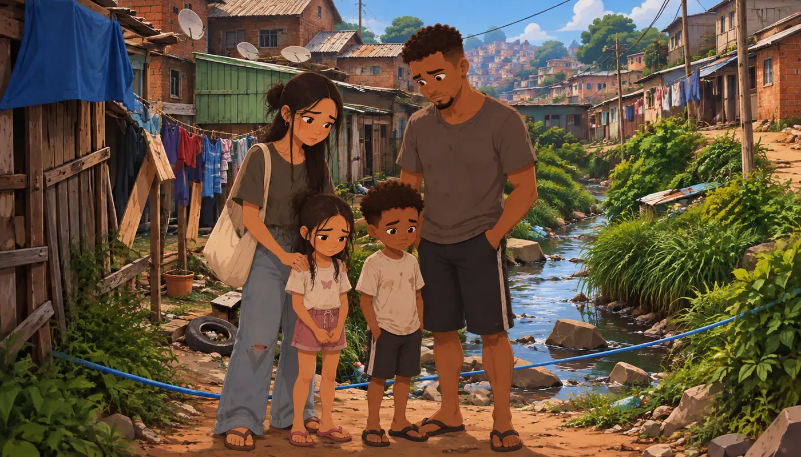
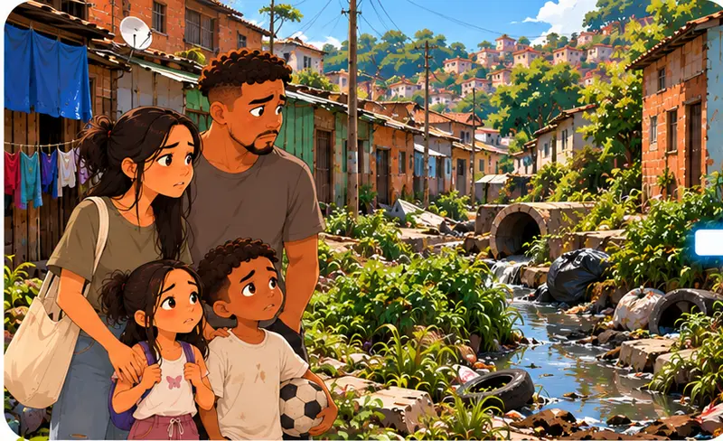
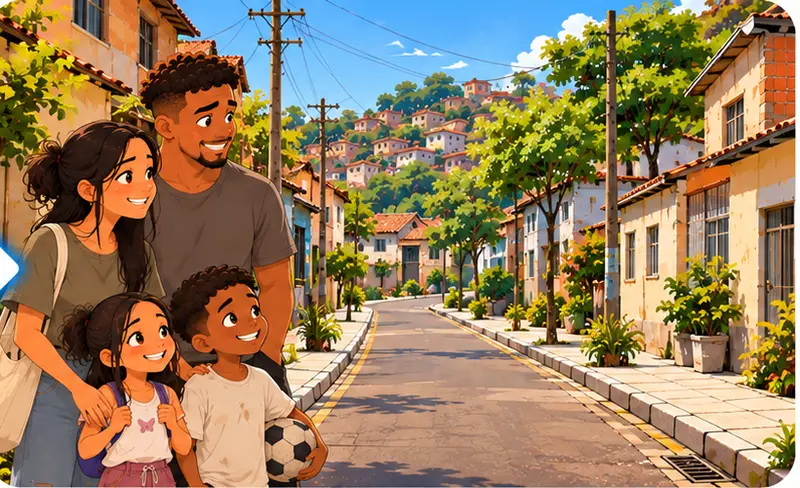

A Família Oliveira vive nesta comunidade há muitos anos.
Nos últimos meses, alguns problemas começaram a fazer parte da rotina: mau cheiro, esgoto próximo às casas, água acumulada e preocupação com a saúde dos moradores.
Uma equipe da ENOPS foi chamada para acompanhar a situação.
Hoje, essa equipe será vocês.
A missão será passar por quatro etapas e ajudar a transformar a realidade desta comunidade.
Preparados?
Completem as quatro salas, na ordem, para transformar a realidade da comunidade.
Converse com os moradores e observe a comunidade antes de tirar conclusões.
Arrastem cada peça para o encaixe correto no mapa da comunidade.
Nem toda imagem é um risco: cliquem apenas nas situações perigosas antes de liberar a obra.
Uma parte da rua está interditada. Uma mãe precisa sair para levar o filho ao médico.


A comunidade antes da intervenção...
No início desta missão, vocês encontraram uma família convivendo diariamente com problemas de saneamento.
Para vocês, foi uma missão.
Para uma família, significa saúde, segurança, dignidade e qualidade de vida.
É esse impacto que o trabalho da ENOPS busca gerar todos os dias.
Texto